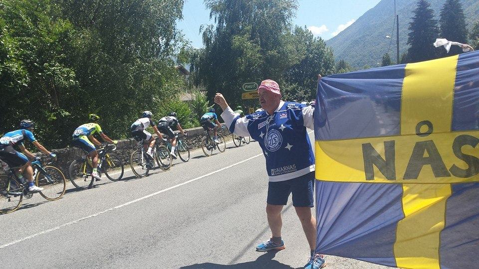

Resmål
De 29 numrerade resmålen kommer från guiden 2014. Resten är nya tips: Tour de France-pass, varma källor, katarborgar och natur. Tryck på ett kort för bilder, text och vägbeskrivning.
Rutter
Två rutter från 2014 – den omvända kungsetappen och inlandsvägen – plus sju nya: katarborgarna, Ariège-passen, Côte Vermeille, Béziers och Canal du Midi, vattenfallsrundan, de varma källorna i Cerdagne och Tour de France-etappen genom Ariège 2026. Linjerna på kartan följer vägarna.
Cykling
Under Proffsloppen finns alla gånger Tour de France, Vueltan och Route d'Occitanie kört i Pyrenéerna sedan 2010, och ryktena om 2027. Under Cykla själv finns klassiska rundor, mountainbike med bikeparker och stigar, motionslopp och hur man anmäler sig, cykeluthyrning och hur man tar sig dit. Tryck på Visa på kartan för att se just det du valt – år, sökning eller område – eller slå på lagren med knappen Lager på kartan.
Källor: Wikipedias etappsidor, Cyclingnews, cyclingstage.com, bikeraceinfo.com, lavuelta.es, wielerflits.nl och tidtagningslistor – länkade under Källor på varje etapp. Efter dopningsdomar gäller det officiella resultatet. Höjder, kategorier och koordinater är ungefärliga och saknas där de inte gått att bekräfta. Bilderna kommer från guidens resmål. Uppdaterat 10 oktober 2026.
Vandring
Legendariska leder som GR 10, GR 11 och HRP, katarernas leder och pilgrimsvägarna till Santiago de Compostela – med lederna på kartan och GPX. Dessutom klassiska dagsturer, de högsta och mest legendariska topparna – Aneto, Posets, Monte Perdido, Vignemale, Montcalm och Pica d'Estats – med normalvägarna steg för steg, en guide till bergsbestigning och historien om katarerna och albigenserkorståget.
Skidåkning
Alla alpina skidorter och längdåkningsområden i Pyrenéerna – i Frankrike, Andorra och Spanien. För varje ort finns backarna och spåren med kilometer, liftar, höjder och liftkort, hur du tar dig dit med flyg, tåg, buss eller bil, och var du kan bo. Dessutom säsong, kombikort, laviner och säkerhet.
Övrig sport
Allt det andra du kan göra i Pyrenéerna: maraton, fjällmaraton och ultratrail, fiske i fjällsjöar, floder och hav – på Medelhavs- och Atlantsidan – med vilka fiskar som finns var. Dessutom kanot, kajak, forsränning och kanjoning, skärmflyg, hängflyg, segelflyg, fallskärmshopp och ballong, och till sist ridning, åsnevandring, via ferrata, klättring, golf och baskisk pelota.
Min resa
Spara resmål och cykeldagar, ändra ordning och skriv egna anteckningar. En cykeldag är en del av en proffsetapp som du väljer under Cykling. Under Ruttförslag räknas en dagsplan fram med förslag på flygplatser och upplägg, och under Boka & kalkyl finns färdiga sökningar för flyg, boende, hyrbil och cykelhyra med en löpande kalkyl. Allt sparas i den här webbläsaren. Från början ligger fem av favoriterna från 2014 här som exempel.
Om guiden
Inledning
Lite vägval
Vad är nytt?
Guiden innehåller nu resmål, varav från 2014. Nytt är bergspassen från Tour de France med höjd, längd och snittlutning, ett femtontal varma källor och spa på båda sidor om gränsen, fler katarborgar, vattenfall och raviner, hela Côte Vermeille från Argelès till Cerbère, Béziers med Canal du Midi, och tipsen från Languedoc-guiden: Collioure, Canigou, Fonserannes slussar, Nîmes och Pont du Gard.
Nytt i oktober 2026 är fliken Cykling: alla Pyrenéetapper i Tour de France, Vuelta a España och Route d'Occitanie 2010–2026 med pall och ledare, ryktena om 2027, och för den som vill cykla själv klassiska rundor, motionslopp med anmälan, cykeluthyrning och resvägar. På kartan finns nu lager med rundor, etapper, uthyrare, motionslopp och flygplatser – tryck på en linje eller punkt för fakta.
Länkarna från 2014 har setts över, men adresser och öppettider ändras. Kontrollera alltid på plats eller på anläggningens webbplats före besöket. Bergspassen kan vara stängda vid snö till långt in på försommaren.
Använd guiden i mobilen
Guiden fungerar i mobilens webbläsare och i Claude-appen. Öppna länken i Safari eller Chrome och välj Lägg till på hemskärmen så får du en ikon som en app. Kartan hämtas från nätet medan du zoomar, så i bergen med dålig täckning – öppna guiden och zooma in på dagens område medan du har wifi.
/ Thomas Bajer
